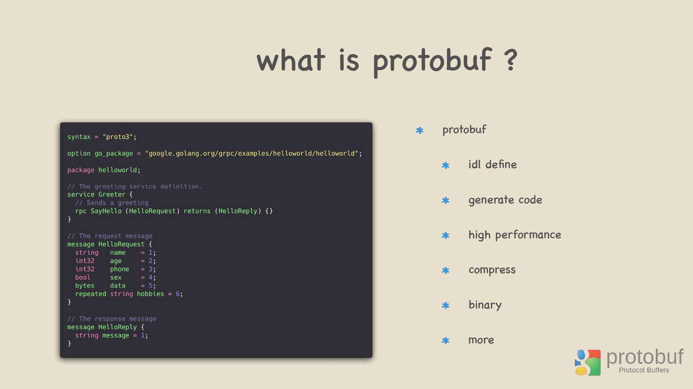

主要以 Python 作为基础进行演示和说明！
gRPC 是一个高性能、通用的开源 RPC 框架，基于 HTTP2 协议标准设计开发，默认采用 Protocol Buffers 数据序列化协议，支持多种开发语言。
1. 什么 gRPC 框架
New to gRPC? Start with the following pages
RPC 框架的目标就是让远程服务调用更加简单、透明，其负责屏蔽底层的传输方式(TCP/UDP)、序列化方式(XML/Json)和通信细节。服务调用者可以像调用本地接口一样调用远程的服务提供者，而不需要关心底层通信细节和调用过程。
常见 gRPC 的应用场景，主要侧重于后端服务之间进行调用，当然也可以使用于移动端。
gRPC 的功能优点
- 高兼容性、高性能、使用简单
gRPC 的组成部分
- 使用
http2作为网络传输层 - 使用
protobuf这个高性能的数据包序列化协议 - 通过
protoc gprc插件生成易用的sdk
- 使用
gRPC 的通信方式
- 客服端一次请求, 服务器一次应答
- 客服端一次请求, 服务器多次应答(流式)
- 客服端多次请求(流式), 服务器一次应答
- 客服端多次请求(流式), 服务器多次应答(流式)
2. 使用 http2 协议
为什么会选用 http2 作为 grpc 的传输协议？
- 除了速度之外，最大的原因就是最大程度的服务兼容性。因为
gRPC基于http2协议，加之市面上主流的代理工具也都支持http2协议，所以自然就支持gRPC了。
- 我们都知道
http协议的几个重要版本，随着不断更新迭代而来，也解决了不同的问题。比如，在http1.0中最大的槽点就是短连接，随着http1.1的出世解决了该性能问题，并且增加了丰富的header语义。
- 在前几年，网站基本都是使用的
http1.1协议。但是，该协议也是存在着很多问题，比如队头阻塞，即一个连接只能跑一个请求，在这个请求没返回数据之前，其他请求就不能占用该连接。通常来说，我们使用的chrome浏览器默认会并发发起六个连接，如果请求太多的话，就需要等待了。虽然http1.1支持pipeline，同时也有一些解决方案，但是还是不够优秀，所以就有了http2协议。
http2协议最大的优点在于多路复用，这里的多路复用不是指传统类似epoll对tcp连接的复用，而是协议层的多路复用，把一个个的请求封装成stream流，这些流是可以并发交错请求，没有http1.1那种队头阻塞问题。
- 当然，未来还会有更好的，
http3协议。
3. gRPC 的核心概念
An introduction to gRPC and protocol buffers.
ProtoBuf buffer是一种数据表达方式，以.proto结尾的数据文件，我们可以将其类比为json、xml等文件。针对ProtoBuf buffer数据源，可以利用protoc工具来生成各种语言的访问类。其优点在于，编解码速度更快且传输的数据更小。

- [1] 编写 proto 文件
- 编写
helloworld.proto文件
- 编写
// 指定使用协议语法
syntax = "proto3";
// 定义一个包
package greeterpb;
// 关键字server来定一个服务
// gRPC的服务是通过参数和返回类型来指定可以远程调用的方法
service Greeter {
rpc SayHello(HelloRequest) returns (HelloReply) {}
rpc SayHelloAgain(HelloRequest) returns (HelloReply) {}
}
// 定义消息请求
// 关键字message来定义请求或相应需要使用的消息格式
message HelloRequest {
string name = 1;
}
// 定义消息响应
// 关键字message来定义请求或相应需要使用的消息格式
message HelloReply {
string message = 1;
}
- [2] 使用 protoc 编译
--python_out: 编译生成处理protobuf相关的代码的路径--grpc_python_out: 编译生成处理grpc相关的代码的路径-I: 指定proto的文件路径
# 编译proto文件
$ python -m grpc_tools.protoc \
--python_out=. --grpc_python_out=. -I. \
helloworld.proto
# 编译后生成的代码
helloworld_pb2.py
helloworld_pb2_grpc.py
- [3] 添加 protobuf 运行时
- 编写
helloworld的grpc实现
- 编写
# 服务器端
# helloworld_grpc_server.py
from concurrent import futures
import time
import grpc
import helloworld_pb2
import helloworld_pb2_grpc
# 实现proto文件中定义的GreeterServicer
class Greeter(helloworld_pb2_grpc.GreeterServicer):
# 实现proto文件中定义的rpc调用
def SayHello(self, request, context):
return helloworld_pb2.HelloReply(message = 'hello {msg}'.format(msg = request.name))
def SayHelloAgain(self, request, context):
return helloworld_pb2.HelloReply(message='hello {msg}'.format(msg = request.name))
def serve():
# 启动rpc服务
server = grpc.server(futures.ThreadPoolExecutor(max_workers=10))
helloworld_pb2_grpc.add_GreeterServicer_to_server(Greeter(), server)
server.add_insecure_port('[::]:50051')
server.start()
try:
while True:
time.sleep(60*60*24)
except KeyboardInterrupt:
server.stop(0)
if __name__ == '__main__':
serve()
# 客户端
# helloworld_grpc_client.py
import grpc
import helloworld_pb2
import helloworld_pb2_grpc
def run():
# 连接rpc服务器
channel = grpc.insecure_channel('localhost:50051')
# 调用rpc服务
stub = helloworld_pb2_grpc.GreeterStub(channel)
response = stub.SayHello(helloworld_pb2.HelloRequest(name='czl'))
print("Greeter client received: " + response.message)
response = stub.SayHelloAgain(helloworld_pb2.HelloRequest(name='daydaygo'))
print("Greeter client received: " + response.message)
if __name__ == '__main__':
run()
- [4] 项目中集成
# 运行启动服务端
$ python3 helloworld_grpc_server.py
# 运行启动客户端
$ python3 helloworld_grpc_client.py
4. 快速使用 gRPC 框架
This guide gets you started with gRPC in Python with a simple working example.
- [1] 构建基础环境
- 创建虚拟环境
# need python3.5+
$ python -m pip install virtualenv
$ virtualenv venv
$ source venv/bin/activate
$ python -m pip install --upgrade pip
- [2] 安装 gRPC 包
grpcio-tools包含了生成对应的程序代码
# install gRPC
$ python -m pip install grpcio
$ python -m pip install grpcio-tools
# install it system wide
$ sudo python -m pip install grpcio
- [3] 下载示例程序
- 仓库非常大，不太好下载，需要梯子强壮
# clone the repository
$ git clone -b v1.37.1 https://github.com/grpc/grpc
# say "hello, world"
$ cd grpc/examples/python/helloworld
- [4] 运行示例程序
- 运行了一个客户机-服务器应用程序
# run the server
$ python greeter_server.py
# run the client
$ python greeter_client.py
- [5] 更新 gRPC 服务
- 即对现有的服务进行更新，来提供不一样的特性
# examples/protos/helloworld.proto
// The greeting service definition.
service Greeter {
// Sends a greeting
rpc SayHello (HelloRequest) returns (HelloReply) {}
// Sends another greeting
rpc SayHelloAgain (HelloRequest) returns (HelloReply) {}
}
// The request message containing the user's name.
message HelloRequest {
string name = 1;
}
// The response message containing the greetings
message HelloReply {
string message = 1;
}
# 进入对应目录
cd examples/python/helloworld
# 重新生成代码
$ python -m grpc_tools.protoc -I../../protos \
--python_out=. --grpc_python_out=. \
../../protos/helloworld.proto
# 生成文件 - 用来和protobuf进行数据交互
helloworld_pb2.py
# 生成文件 - 用来和grpc进行数据交互
helloworld_pb2_grpc.py
# 调整客户端代码 - greeter_client.py
def run():
channel = grpc.insecure_channel('localhost:50051')
stub = helloworld_pb2_grpc.GreeterStub(channel)
response = stub.SayHello(helloworld_pb2.HelloRequest(name='you'))
print("Greeter client received: " + response.message)
response = stub.SayHelloAgain(helloworld_pb2.HelloRequest(name='you'))
print("Greeter client received: " + response.message)
# 调整服务端代码 - greeter_server.py
class Greeter(helloworld_pb2_grpc.GreeterServicer):
def SayHello(self, request, context):
return helloworld_pb2.HelloReply(message='Hello, %s!' % request.name)
def SayHelloAgain(self, request, context):
return helloworld_pb2.HelloReply(message='Hello again, %s!' % request.name)
...
# run the server
$ python greeter_server.py
# run the client
$ python greeter_client.py
5. gRPC 的应用场景
RPC 的使用场景：分布式系统
随着微服务的不断发展，基于语言中立性的原则构建微服务，逐渐成为一种主流设计模式。例如对于后端并发处理要求高的微服务，比较适合采用 Go 语言构建，而对于前端的 Web 界面，则更适合 JavaScript。因此，基于多语言的 gRPC 框架来构建微服务，是一种比较好的技术选择。
- [1] gRPC Microservice
- [2] gRPC K8S
6. 参考链接地址
送人玫瑰，手有余香！